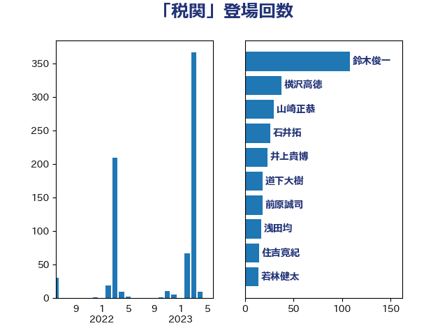

単語「税関」

| 鈴木俊一 | 自由民主党 | 108 回 |
| 横沢高徳 | 立憲民主党 | 38 回 |
| 山崎正恭 | 公明党 | 30 回 |
| 石井拓 | 自由民主党 | 26 回 |
| 井上貴博 | 自由民主党 | 23 回 |
| 道下大樹 | 立憲民主党 | 18 回 |
| 前原誠司 | 国民民主党 | 18 回 |
| 浅田均 | 日本維新の会 | 17 回 |
| 住吉寛紀 | 日本維新の会 | 15 回 |
| 若林健太 | 自由民主党 | 14 回 |
| 石原正敬 | 自由民主党 | 14 回 |
| 大塚耕平 | 国民民主党 | 14 回 |
| 秋野公造 | 公明党 | 12 回 |
| 末松義規 | 立憲民主党 | 12 回 |
| 堂込麻紀子 | 無所属 | 11 回 |
| 藤巻健太 | 日本維新の会 | 10 回 |
| 櫻井周 | 立憲民主党 | 9 回 |
| 熊谷裕人 | 立憲民主党 | 7 回 |
| 神谷宗幣 | 参政党 | 6 回 |
| 牧山ひろえ | 立憲民主党 | 6 回 |
| 森田俊和 | 立憲民主党 | 6 回 |
| 米山隆一 | 立憲民主党 | 5 回 |
| 馬場成志 | 自由民主党 | 4 回 |
| 船橋利実 | 自由民主党 | 4 回 |
| 稲富修二 | 立憲民主党 | 4 回 |
| 岸田文雄 | 自由民主党 | 4 回 |
| 大家敏志 | 自由民主党 | 4 回 |
| 上田勇 | 公明党 | 4 回 |
| 野村哲郎 | 自由民主党 | 3 回 |
| 沢田良 | 日本維新の会 | 3 回 |
| 岬麻紀 | 日本維新の会 | 3 回 |
| 岡本三成 | 公明党 | 3 回 |
| 野中厚 | 自由民主党 | 2 回 |
| 谷公一 | 自由民主党 | 2 回 |
| 林芳正 | 自由民主党 | 2 回 |
| 本田顕子 | 自由民主党 | 2 回 |
| 後藤祐一 | 立憲民主党 | 2 回 |
| 塚田一郎 | 自由民主党 | 2 回 |
| 勝部賢志 | 立憲民主党 | 2 回 |
| 伊藤渉 | 公明党 | 2 回 |
| 高橋光男 | 公明党 | 1 回 |
| 金子恵美 | 立憲民主党 | 1 回 |
| 金子俊平 | 自由民主党 | 1 回 |
| 重徳和彦 | 立憲民主党 | 1 回 |
| 酒井庸行 | 自由民主党 | 1 回 |
| 豊田俊郎 | 自由民主党 | 1 回 |
| 西野太亮 | 自由民主党 | 1 回 |
| 芳賀道也 | 国民民主党 | 1 回 |
| 自見はなこ | 自由民主党 | 1 回 |
| 福田昭夫 | 立憲民主党 | 1 回 |
| 浜田聡 | NHK党 | 1 回 |
| 河野太郎 | 自由民主党 | 1 回 |
| 梅谷守 | 立憲民主党 | 1 回 |
| 杉田水脈 | 自由民主党 | 1 回 |
| 山口壯 | 自由民主党 | 1 回 |
| 塩田博昭 | 公明党 | 1 回 |
| 城井崇 | 立憲民主党 | 1 回 |
| 中島克仁 | 立憲民主党 | 1 回 |